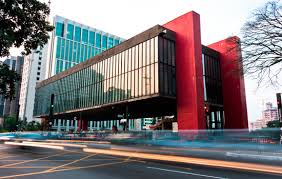

Museu de Arte de São Paulo (MASP)
Fundado em 1947, o museu possui um acervo de 10 mil obras, porém nem todas já foram expostas no MASP. Para se ter uma noção do tamanho da importância do MASP para a arte mundial, o museu é uma das quatro instituições do mundo todo que possui uma coleção completa de Edgar Degas.